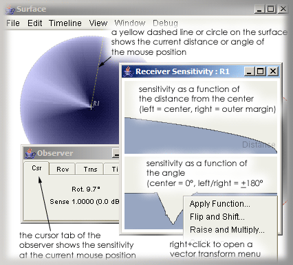

The receiver sensitivity editor is comprised of two socalled vector-editors, one for the distance vector and one for the rotation vector. By default both vectors have 1024 elements, this will be user-adjustable in the future. The vectors are automatically scaled according to the window size.
The sensitivity of the the two table-lookup based receivers - Sigma Receiver and Sector Receiver - is a product of these two vectors. For the Sigma Receiver, the distance vector describes the sensitivity as a function of the distance of a point from the receivers center anchor point, while the rotation vector describes the sensitivity as a function of the angle of a point in relation to the receiver's center point. Hence, for omnidirectional characteristics, the rotation vector should have the constant value 1.0. The distance vector usually has full sensitivity (1.0) at the center - which is the left margin in editor - and no sensitivity (0.0) at its bounds - which is the right margin in the editor. The default vectors follow a square-root rule and are quite suitable for amplitude-panning.
The unity gain of 1.0 is located at the center of the Y-axis, therefore its possible to 'boost' parts by a factor of up to 2.0 (= +6 dB). The vectors can be modified by drawing directly with the mouse (select the pencil tool first) or by invoking one of the context menus (Right-Click or
Ctrl+Click):